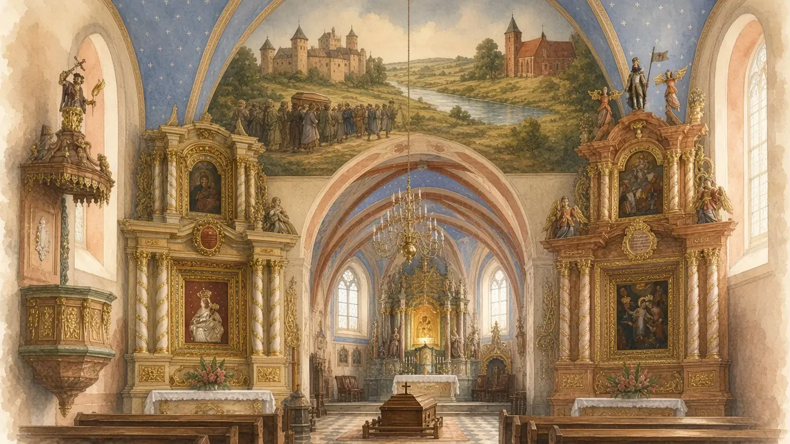
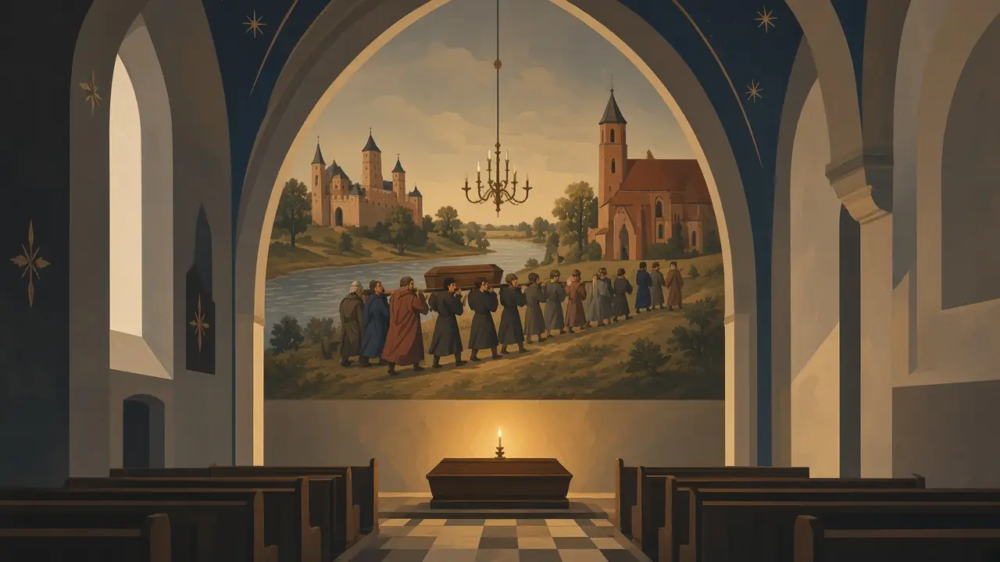
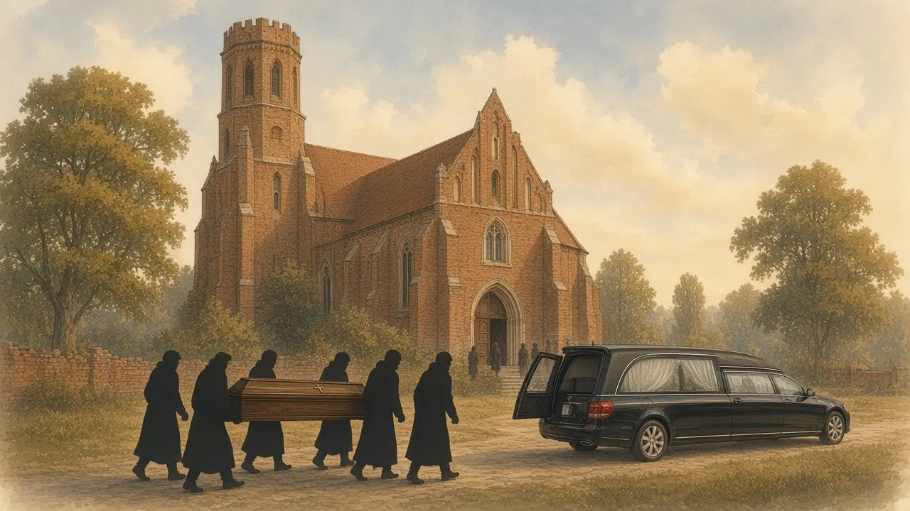
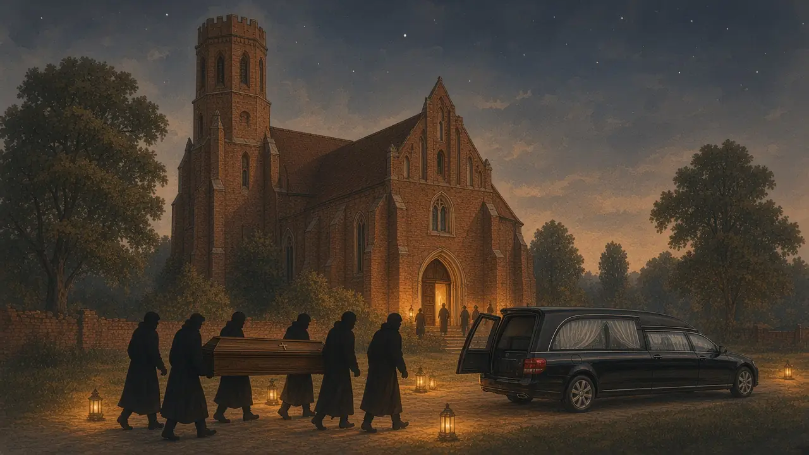
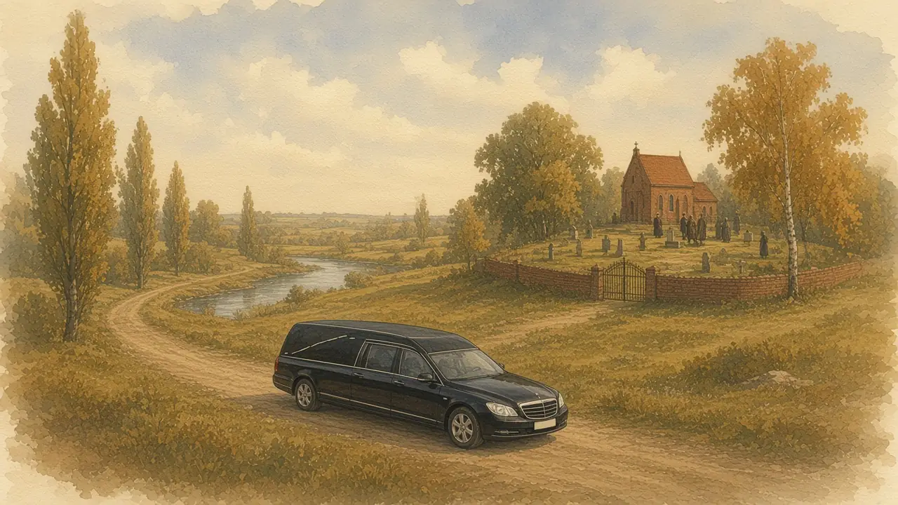
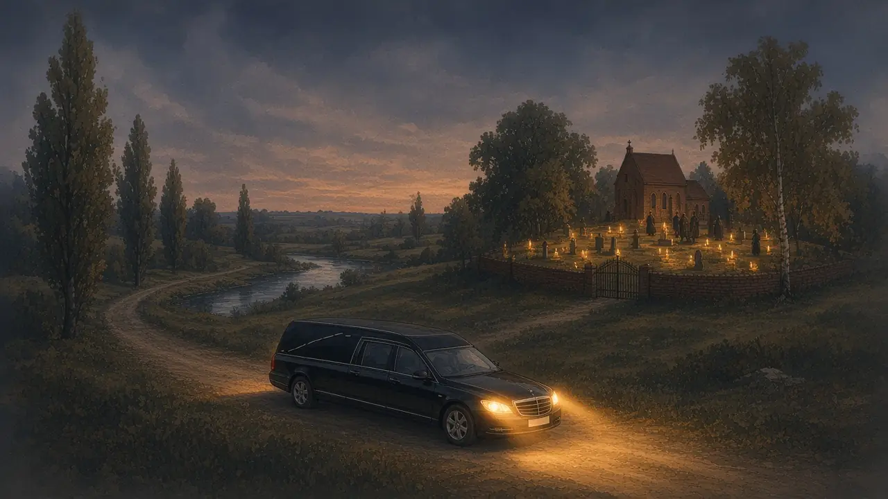
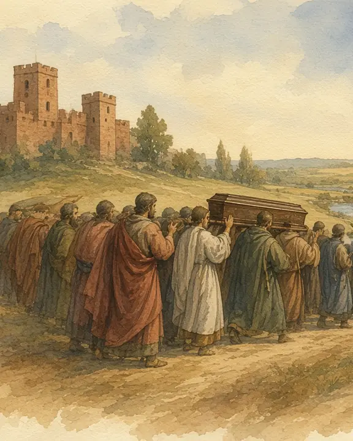

Uniejów · Turek · całodobowo
Jesteśmy z Państwem w najtrudniejszej chwili
Z szacunkiem i spokojem pomagamy pożegnać bliską osobę. Zajmiemy się wszystkim, krok po kroku.
Zakład Usług Pogrzebowych
Uniejów · Turek
Jesteśmy z Państwem w najtrudniejszej chwili. Z szacunkiem i spokojem pomagamy pożegnać bliską osobę. Odbieramy całą dobę.
Uniejów · Turek · całodobowo
Z szacunkiem i spokojem pomagamy pożegnać bliską osobę. Zajmiemy się wszystkim, krok po kroku.


Zakład Usług Pogrzebowych · Uniejów i Turek
Z szacunkiem i spokojem pomagamy pożegnać bliską osobę.


Ceremonia


Ostatnia droga
Jesteśmy przy Was
O nas
Zakład Usług Pogrzebowych Pacholczyk prowadzi Filip Pacholczyk. Pomagamy rodzinom z Uniejowa, Turku i okolicznych gmin.
Szanujemy każde wyznanie i każdą wolę rodziny. Organizujemy pogrzeby katolickie, innych wyznań i świeckie. Przejmujemy formalności, aby rodzina miała czas na pożegnanie.

Usługi
Kompleksowa organizacja pogrzebu. Rodzina mówi, czego potrzebuje, a my zajmujemy się resztą.
Ustalamy termin z parafią lub zarządem cmentarza i prowadzimy całą ceremonię.
Całodobowy przewóz zmarłego z domu, szpitala lub domu opieki. Także na dalsze odległości.
Akt zgonu w urzędzie stanu cywilnego, zasiłek pogrzebowy z ZUS lub KRUS, dokumenty dla parafii.
Trumny i urny, przygotowanie zmarłego, obsługa konduktu, muzyka, nekrologi.
Organizujemy kremację i pochówek urny, także w kolumbarium.
Pomagamy uzyskać zgody i przeprowadzamy ekshumację z należytym szacunkiem.
Kwiaty na ceremonię, wieńce i wiązanki z szarfą z napisem.
Pierwsze kroki
Najważniejsze odpowiedzi w jednym miejscu. Jeśli nie wiedzą Państwo, co dalej — wystarczy zadzwonić.
Prosimy wezwać lekarza (lekarza rodzinnego, a w nocy i w święta nocną pomoc lekarską). Lekarz stwierdza zgon i wystawia kartę zgonu. Potem prosimy do nas zadzwonić — przyjedziemy o każdej porze.
Kartę zgonu wystawia lekarz placówki. Prosimy o telefon do nas — odbierzemy zmarłego i ustalimy dalsze kroki.
Karta zgonu i dowód osobisty zmarłego. Na tej podstawie urząd stanu cywilnego sporządza akt zgonu. Pomagamy w tej sprawie.
Tak. Przygotowujemy wniosek do ZUS lub KRUS i wyjaśniamy, jak rozliczyć koszty pogrzebu.
Kontakt
Telefon stacjonarny: 63 288 85 54. Odbieramy całą dobę, 7 dni w tygodniu.